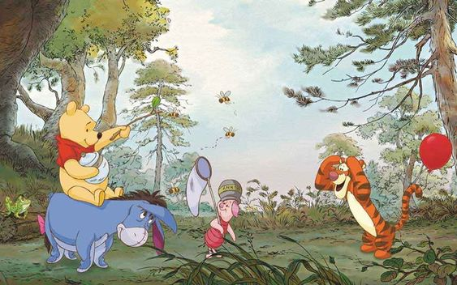
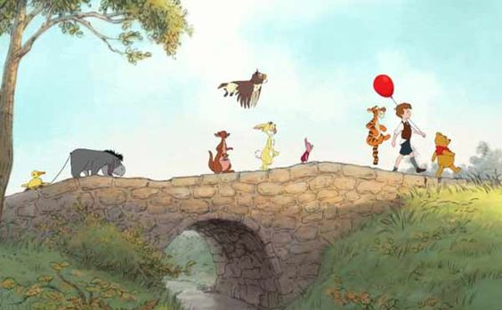

Osito de peluche antropomorfo que es protagonista de varios libros creados por Alan Alexander Milne.

Tigger es posiblemente el miembro más excéntrico del Bosque de los Cien Acres. Demasiado enérgico, imprudente y bastante irreflexivo.
Piglet es un pequeño cerdito rosa con una camiseta rosa con rayas. Es el mejor amigo de Pooh.

Igor casi nunca es feliz, e incluso cuando lo es, sigue siendo sardónico y un poco cínico.

Owl es considerado por la mayoría como el residente más inteligente del Bosque de los Cien Acres.
Es un conejo muy trabajdor, que se encarga, especialmente, de cuidar su huerto.

Es un conejo muy trabajdor, que se encarga, especialmente, de cuidar su huerto.
Es el más joven de los habitantes del Bosque de los 100 Acres. Siempre quiere estar junto a Tigger, su héroe.

Christopher es un joven amistoso y parece ser bastante inteligente para un niño de su edad. También es aventurero y animado, y a veces puede llevar sus aventuras imaginativas demasiado creativas.
Winnie the Pooh's Home Run Derby es un videojuego de béisbol de 2007 desarrollado por Walt Disney Japan. El juego de navegador basado en Adobe Flash se publicó por primera vez en línea en el sitio DisneyGames.jp, luego por Yahoo! Japón en su Yahoo! Portal de niños.
.jpg)
Tigger's Honey Hunt es un videojuego basado en la franquicia Winnie the Pooh que se lanzó en 2000 para Nintendo 64, PlayStation y Microsoft Windows.
.jpg)
"Gigantes Batallas" es un juego de lucha basado en la serie de televisión "Un Show Más". En este juego, los jugadores controlan a uno de los personajes de la serie y luchan contra otros personajes en batallas épicas.
.jpg)